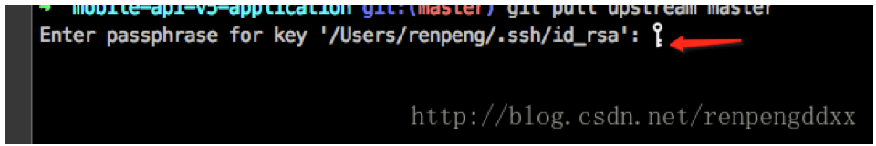
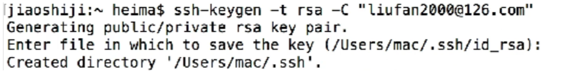
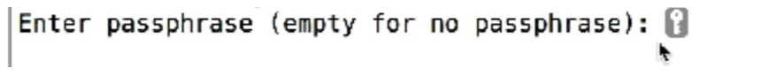
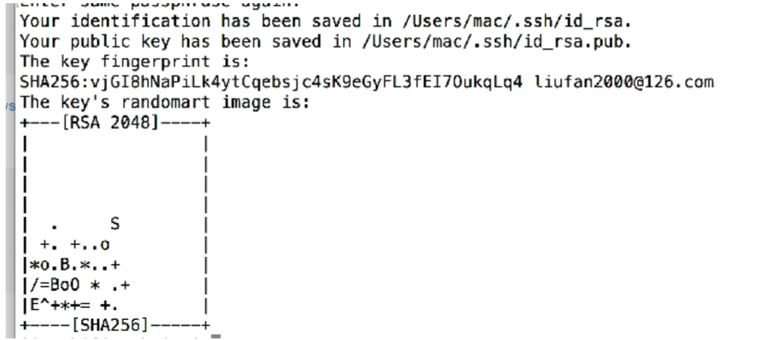

<!DOCTYPE html>
<html>
<head><meta name="generator" content="Hexo 3.8.0">
  <meta charset="utf-8">
  

  
  <title>git使用 | Hexo</title>
  <meta name="viewport" content="width=device-width, initial-scale=1, maximum-scale=1">
  <meta name="description" content="You can do that like this:nore只能忽略那些原来没有被track的文件，如果某些文件已经被纳入了版本管理中，则修改.gitignore是无效的。那么解决方法就是先把本地缓存删除（改变成未track状态），然后再提交：git rm -r –cached .git add .git commit -m ‘update .gitignore’`ls -a 显示所有文件夹  包">
<meta property="og:type" content="article">
<meta property="og:title" content="git使用">
<meta property="og:url" content="http://yoursite.com/2019/03/01/git使用/index.html">
<meta property="og:site_name" content="Hexo">
<meta property="og:description" content="You can do that like this:nore只能忽略那些原来没有被track的文件，如果某些文件已经被纳入了版本管理中，则修改.gitignore是无效的。那么解决方法就是先把本地缓存删除（改变成未track状态），然后再提交：git rm -r –cached .git add .git commit -m ‘update .gitignore’`ls -a 显示所有文件夹  包">
<meta property="og:locale" content="default">
<meta property="og:image" content="http://yoursite.com/2019/03/01/git使用/2019-03-01-08-59-45.png">
<meta property="og:image" content="http://yoursite.com/2019/03/01/git使用/2019-03-01-09-01-34.png">
<meta property="og:image" content="http://yoursite.com/2019/03/01/git使用/2019-03-01-09-01-48.png">
<meta property="og:image" content="http://yoursite.com/2019/03/01/git使用/2019-03-01-09-02-04.png">
<meta property="og:updated_time" content="2019-03-01T03:05:42.723Z">
<meta name="twitter:card" content="summary">
<meta name="twitter:title" content="git使用">
<meta name="twitter:description" content="You can do that like this:nore只能忽略那些原来没有被track的文件，如果某些文件已经被纳入了版本管理中，则修改.gitignore是无效的。那么解决方法就是先把本地缓存删除（改变成未track状态），然后再提交：git rm -r –cached .git add .git commit -m ‘update .gitignore’`ls -a 显示所有文件夹  包">
<meta name="twitter:image" content="http://yoursite.com/2019/03/01/git使用/2019-03-01-08-59-45.png">
  
    <link rel="alternate" href="/atom.xml" title="Hexo" type="application/atom+xml">
  
  
    <link rel="icon" href="/favicon.png">
  
  
    <link href="//fonts.googleapis.com/css?family=Source+Code+Pro" rel="stylesheet" type="text/css">
  
  <link rel="stylesheet" href="/css/style.css">
</head>
</html>
<body>
  <div id="container">
    <div id="wrap">
      <header id="header">
  <div id="banner"></div>
  <div id="header-outer" class="outer">
    <div id="header-title" class="inner">
      <h1 id="logo-wrap">
        <a href="/" id="logo">Hexo</a>
      </h1>
      
    </div>
    <div id="header-inner" class="inner">
      <nav id="main-nav">
        <a id="main-nav-toggle" class="nav-icon"></a>
        
          <a class="main-nav-link" href="/">Home</a>
        
          <a class="main-nav-link" href="/archives">Archives</a>
        
      </nav>
      <nav id="sub-nav">
        
          <a id="nav-rss-link" class="nav-icon" href="/atom.xml" title="RSS Feed"></a>
        
        <a id="nav-search-btn" class="nav-icon" title="Search"></a>
      </nav>
      <div id="search-form-wrap">
        <form action="//google.com/search" method="get" accept-charset="UTF-8" class="search-form"><input type="search" name="q" class="search-form-input" placeholder="Search"><button type="submit" class="search-form-submit">&#xF002;</button><input type="hidden" name="sitesearch" value="http://yoursite.com"></form>
      </div>
    </div>
  </div>
</header>
      <div class="outer">
        <section id="main"><article id="post-git使用" class="article article-type-post" itemscope itemprop="blogPost">
  <div class="article-meta">
    <a href="/2019/03/01/git使用/" class="article-date">
  <time datetime="2019-02-28T23:13:34.000Z" itemprop="datePublished">2019-03-01</time>
</a>
    
  </div>
  <div class="article-inner">
    
    
      <header class="article-header">
        
  
    <h1 class="article-title" itemprop="name">
      git使用
    </h1>
  

      </header>
    
    <div class="article-entry" itemprop="articleBody">
      
        <p><br>You can do that like this:<br>nore只能忽略那些原来没有被track的文件，如果某些文件已经被纳入了版本管理中，则修改.gitignore是无效的。那么解决方法就是先把本地缓存删除（改变成未track状态），然后再提交：<br>git rm -r –cached .<br>git add .<br>git commit -m ‘update .gitignore’<br><code>`</code><br>ls -a 显示所有文件夹  包括隐藏文件</p>
<p>git status  查看被修改的文件<br> 显示commit历史，以及每次commit发生变更的文件<br>git log –stat<br>查看文件修改的具体内容<br>git log -p 文件路径</p>
<a id="more"></a>
<h3 id="撤销上次提交"><a href="#撤销上次提交" class="headerlink" title="撤销上次提交"></a>撤销上次提交</h3><p>git log 找到想要撤销的操作之前的一次提交的commitid<br> git reset –hard  commitid<br>如果提交到远程，需要将远程的分支代码也撤销<br>执行 git  push origin 分支名字 –force<br>// HEAD  指向master<br>// 为了覆盖掉远端的版本信息，使远端的仓库也回退到相应的版本，需要加上参数–force<br>git  push origin 分支名字 –force<br>git push origin HEAD –force</p>
<p>//新建远程分支<br>git checout -b develop<br>// 推到远程<br>git push origin develop</p>
<p>###配置忽略文件<br>1、在终端上进入项目，与.git文件并列的地方，执行vim .gitignore 操作（创建一个忽略文件）<br>vim .gitignore<br>2、<a href="https://github.com/github/gitignore/blob/master/Objective-C.gitignore" target="_blank" rel="noopener">https://github.com/github/gitignore/blob/master/Objective-C.gitignore</a><br>复制忽略文件<br>3、ESC退出  保存 wq<br>4：这个时候你发现，git status时你忽略的文件已经没有存在了。<br>如果按照上述方法定义后发现并未生效，原因是.gitignore只能忽略那些原来没有被track的文件，如果某些文件已经被纳入了版本管理中，则修改.gitignore是无效的。那么解决方法就是先把本地缓存删除（改变成未track状态），我一般都是删除所有缓存，不用单个删除，然后再提交：<br>git rm -r –cached .<br>git add .<br>git commit -m ‘update .gitignore’</p>
<p>单个文件缓存删除：git rm -r –cached 文件地址</p>
<p>###单个 文件被修改了，但未执行 git add<br>git checkout filename<br>git checkout .</p>
<p>###强制推送<br>git push -f origin master</p>
<h3 id="关联远程仓库"><a href="#关联远程仓库" class="headerlink" title="关联远程仓库"></a>关联远程仓库</h3><p>git remote add origin  git地址</p>
<h3 id="删除"><a href="#删除" class="headerlink" title="删除"></a>删除</h3><p>git remote rm origin</p>
<h3 id="git项目配置"><a href="#git项目配置" class="headerlink" title="git项目配置"></a>git项目配置</h3><p>进入终端输入以下命令</p>
<ol>
<li>生成rsa秘钥对</li>
<li>ssh-keygen -t rsa -C ‘邮箱名字’</li>
<li>提示生成<br><br>直接回车</li>
<li><p>要求输入密码<br><br>可以不用输入<br>以上操作完成 生成公钥私钥对<br></p>
</li>
<li><p>查看公钥内容   把公钥传到服务器<br>cat ~/.ssh/id_rsa.pub</p>
</li>
<li>复制公钥<br>pbcopy &lt;  ~/.ssh/id_rsa.pub<br>将公钥复制到github上 SSH上进行配置</li>
<li>测试ssh连接<br>ssh -T <a href="mailto:git@github.com" target="_blank" rel="noopener">git@github.com</a><br>出现这个 添加成功</li>
</ol>

      
    </div>
    <footer class="article-footer">
      <a data-url="http://yoursite.com/2019/03/01/git使用/" data-id="cjspkmc5b0002bhr6aut1nazo" class="article-share-link">Share</a>
      
      
    </footer>
  </div>
  
    
<nav id="article-nav">
  
    <a href="/2019/03/01/hello-world/" id="article-nav-newer" class="article-nav-link-wrap">
      <strong class="article-nav-caption">Newer</strong>
      <div class="article-nav-title">
        
          Hello World
        
      </div>
    </a>
  
  
    <a href="/2018/05/09/charles抓包配置/" id="article-nav-older" class="article-nav-link-wrap">
      <strong class="article-nav-caption">Older</strong>
      <div class="article-nav-title">charles抓包配置</div>
    </a>
  
</nav>

  
</article>

</section>
        
          <aside id="sidebar">
  
    

  
    

  
    
  
    
  <div class="widget-wrap">
    <h3 class="widget-title">Archives</h3>
    <div class="widget">
      <ul class="archive-list"><li class="archive-list-item"><a class="archive-list-link" href="/archives/2019/03/">March 2019</a></li><li class="archive-list-item"><a class="archive-list-link" href="/archives/2018/05/">May 2018</a></li></ul>
    </div>
  </div>


  
    
  <div class="widget-wrap">
    <h3 class="widget-title">Recent Posts</h3>
    <div class="widget">
      <ul>
        
          <li>
            <a href="/2019/03/01/configs/sorts/">(no title)</a>
          </li>
        
          <li>
            <a href="/2019/03/01/hello-world/">Hello World</a>
          </li>
        
          <li>
            <a href="/2019/03/01/git使用/">git使用</a>
          </li>
        
          <li>
            <a href="/2018/05/09/charles抓包配置/">charles抓包配置</a>
          </li>
        
      </ul>
    </div>
  </div>

  
</aside>
        
      </div>
      <footer id="footer">
  
  <div class="outer">
    <div id="footer-info" class="inner">
      &copy; 2019 John Doe<br>
      Powered by <a href="http://hexo.io/" target="_blank">Hexo</a>
    </div>
  </div>
</footer>
    </div>
    <nav id="mobile-nav">
  
    <a href="/" class="mobile-nav-link">Home</a>
  
    <a href="/archives" class="mobile-nav-link">Archives</a>
  
</nav>
    

<script src="//ajax.googleapis.com/ajax/libs/jquery/2.0.3/jquery.min.js"></script>


  <link rel="stylesheet" href="/fancybox/jquery.fancybox.css">
  <script src="/fancybox/jquery.fancybox.pack.js"></script>


<script src="/js/script.js"></script>


  </div>
</body>
</html>